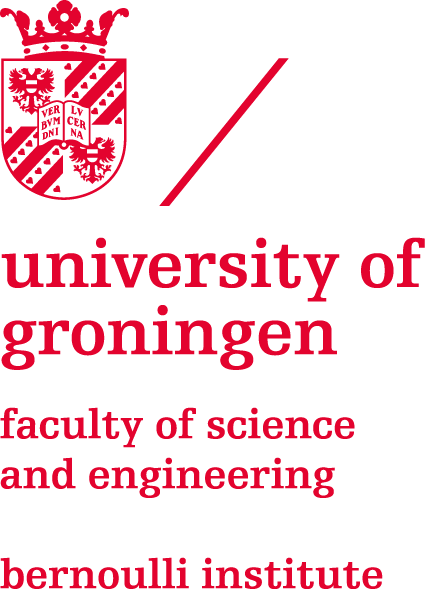
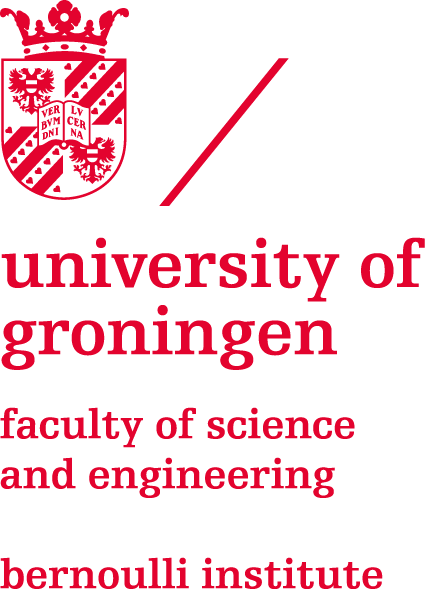

Theme
The focus of this edition of SNiC will be on the IT of mobility. For the past years there have been major leaps forward in the use of computers and AI in vehicles - think self driving cars, the optimisation of fuel usage in aeroplanes, or apps that perform diagnostics on the engine of your motorcycle. But MobilIT can be extended to much more than that: we can analyse the organisation of public transportation, or take a closer look at the latest innovations in bionics and cybernetics - tech that will open up a future of mobility for everyone.
During SNiC 2020/2021 we will approach the future of mobility from a wide variety of angles: security is essential for high-tech transportation in an age of self driving cars and cyber-warfare; theoretical computing science is the core discipline behind route optimisation algorithms; Artificial limbs are almost completely computer driven; and of course Artificial Intelligence will play a starring role.